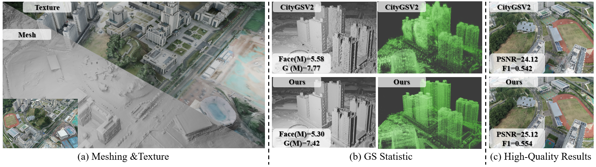
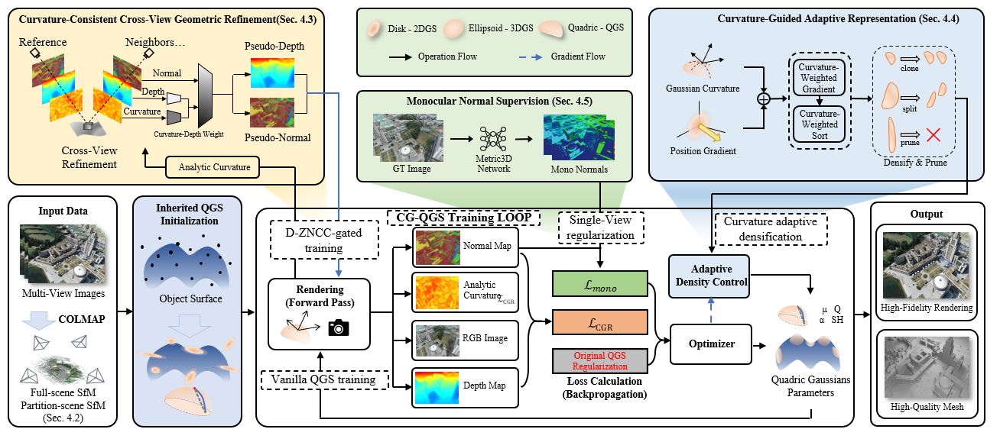
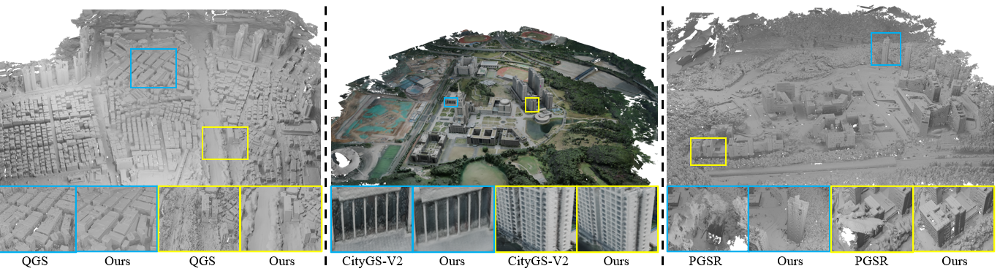
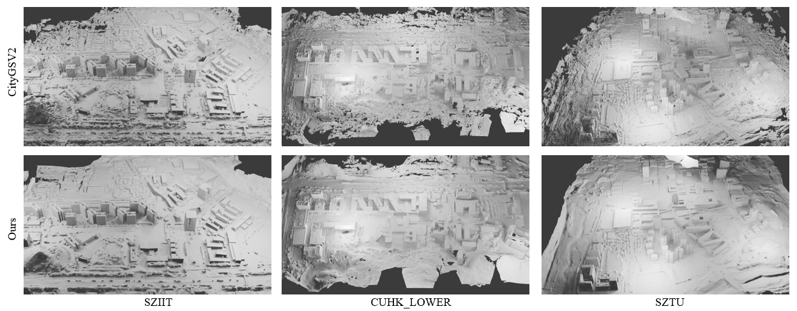
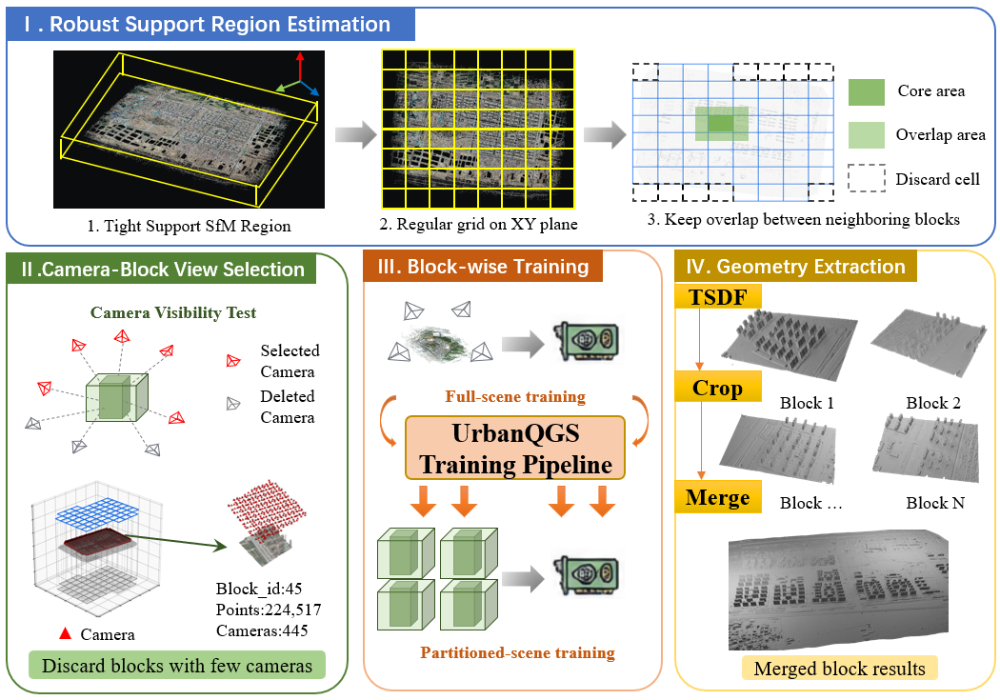

Cross-view consistency
A self-supervised geometric constraint uses curvature-consistent neighboring views to fill holes in weak-texture planar regions.
Large-scale urban surface reconstruction
Large-Scale Urban Surface Reconstruction via Analytic Curvature Consistency in Quadratic Gaussian Splatting
A curvature-driven framework for reconstructing complete, detailed, and compact urban surfaces from UAV imagery.

Overview
Large-scale 3D surface reconstruction at the city scale from UAV imagery is a core task for building digital-twin cities. Although 3D Gaussian Splatting (3DGS) and its variants have achieved remarkable progress in radiance-field reconstruction, existing methods still struggle with scale-varying structural complexity and diverse urban textures: geometry is often incomplete in low-frequency, weak-texture regions over large areas, while in high-frequency regions with intricate details, disordered primitive distributions tend to cause floating artifacts and outliers.
To address these issues, we propose UrbanQGS, a large-scale urban reconstruction framework built on quadratic Gaussian splatting. We use analytic curvature as the central driving signal for geometric refinement, adaptive representation allocation, and reliable cross-view supervision.
How it works
UrbanQGS combines quadratic surface Gaussians with curvature-aware optimization to improve both completeness and efficiency.

A self-supervised geometric constraint uses curvature-consistent neighboring views to fill holes in weak-texture planar regions.
Curvature reweights, recalibrates, and ranks densification gradients, directing split and clone operations to complex geometry.
A monocular normal prior helps correct orientation drift during large-scale reconstruction.
Visibility-aware block-wise training supports large scenes with hardware-constrained per-block budgets on a single GPU.
Qualitative results
UrbanQGS maintains strong geometric quality across large urban scenes while reducing floating artifacts and unnecessary representation growth.


Large-scene pipeline
A visibility-aware protocol divides large scenes into manageable blocks, trains them sequentially, and merges the extracted geometry.

Selected results
Citation
@article{cheng2025urbanqgs,
title = {UrbanQGS: Large-Scale Urban Surface Reconstruction via Analytic Curvature Consistency in Quadratic Gaussian Splatting},
author = {Cheng, Yuanhang and Yang, Zhe and Lei, Juan and Chu, Jisheng and Li, Wenrui and Xu, Zheng and Chen, Zhuo and Chen, Gang},
journal = {Preprint},
year = {2025}
}